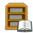
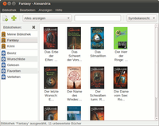
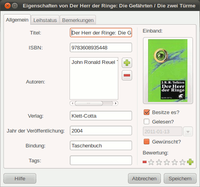

Alexandria
Archivierte Anleitung
Dieser Artikel wurde archiviert, da er - oder Teile daraus - nur noch unter einer älteren Ubuntu-Version nutzbar ist. Diese Anleitung wird vom Wiki-Team weder auf Richtigkeit überprüft noch anderweitig gepflegt. Zusätzlich wurde der Artikel für weitere Änderungen gesperrt.
Zum Verständnis dieses Artikels sind folgende Seiten hilfreich:

Alexandria  ist eine Bücherverwaltung für GNOME. Das Programm ist nach der Stadt Alexandria, die in der Antike die größte Bibliothek der Welt beherbergte, benannt. Alexandria wurde in Ruby geschrieben und unter der GNU GPL Lizenz veröffentlicht.
ist eine Bücherverwaltung für GNOME. Das Programm ist nach der Stadt Alexandria, die in der Antike die größte Bibliothek der Welt beherbergte, benannt. Alexandria wurde in Ruby geschrieben und unter der GNU GPL Lizenz veröffentlicht.
Aufgaben, die man mit Alexandria erledigen kann, sind unter anderem:
Verwaltung des eigenen Bücherbestandes
Übersicht über ausgeliehene Bücher
Buchrecherche
Wunschliste
Hinweis:
Das Programm wird scheinbar nicht mehr weiterentwickelt. Der letzte Commit zum Code auf Launchpad als auch die letzte Aktualisierung des PPAs datieren auf Mitte 2012.
Installation¶
Alexandria ist nicht mehr in den offiziellen Paketquellen enthalten. Daher muss ein "Personal Package Archiv" (PPA) [1] genutzt werden.
PPA¶
Adresszeile zum Hinzufügen des PPAs:
ppa:alexandria-team/ppa
Hinweis!
Zusätzliche Fremdquellen können das System gefährden.
Ein PPA unterstützt nicht zwangsläufig alle Ubuntu-Versionen. Weitere Informationen sind der  PPA-Beschreibung des Eigentümers/Teams alexandria-team zu entnehmen.
PPA-Beschreibung des Eigentümers/Teams alexandria-team zu entnehmen.
Damit Pakete aus dem PPA genutzt werden können, müssen die Paketquellen neu eingelesen werden.
Nach dem Aktualisieren der Paketquellen kann das Programm installiert werden [2]:
alexandria (ppa)
 mit apturl
mit apturl
Paketliste zum Kopieren:
sudo apt-get install alexandria
sudo aptitude install alexandria
Benutzung¶

Bibliotheken¶
In den Bibliotheken werden die Bücher eingetragen, unter "Bibliothek -> Neue Bibliothek" kann man weitere anlegen. Intelligente Bibliotheken dienen als Filter: in ihnen können keine Bücher gespeichert werden, die entsprechenden Knöpfe bleiben deaktiviert, solange eine intelligente Bibliothek aktiv ist. Zu Beginn sind folgende intelligente Bibliotheken vorkonfiguriert:
"Besitz"
"Wunschliste"
"Gelesen"
"Favoriten"
"Verliehen"
Unter "Bibliothek -> Neue intelligente Bibliothek" kann man weitere erstellen, nach Aufruf öffnet sich ein Dialogfenster um Filter zu definieren.
Bücher hinzufügen¶
Mit "Bibliothek -> Buch hinzufügen" können weitere Bücher bequem über eine Internetsuche ergänzt werden, man kann entweder nach der ISBN oder nach dem Titel bzw. Autor des Buches suchen. Die verwendeten Buchinformations-Anbieter müssen vorher festgelegt werden. Gibt es mehrere Suchtreffer, werden sie in einer Vorschaufunktion dargestellt, hier kann man mehrere Bücher mit gedrückter Strg -Taste auswählen und hinzufügen. Mit "Speichern in" kann man die Bibliothek festlegen, in die gespeichert werden soll. Will man mehrere Bücher ergänzen, ist die Funktion "Dialog nach dem Hinzufügen offen halten" hilfreich.
Wird ein Buch nicht gefunden, kann man unter "Bibliothek -> Buch manuell hinzufügen" das Buch selbst ergänzen. Es öffnet sich ein leeres Eigenschaftsfenster, in das man die Daten eintragen kann. Pflichtfelder sind Titel, Autor, Verlag und Bindung.
Eine komfortable Möglichkeit, um Bücher aufzunehmen, ist ein Barcodescanner. Die entsprechende Funktion findet man unter "Bibliothek -> Vom Scanner empfangen".
Internetsuche¶
Die Internetsuche wird unter "Bearbeiten -> Einstellungen -> Anbieter" verwaltet. Hier kann die Buchinformations-Anbieter auswählen und festlegen in welcher Reihenfolge sie durchsucht werden sollen. Nach einem erfolgreichem Treffer bei einem Suchanbieter wird die Suche beendet. Folgende Datenbanken können durchsucht werden:
"Amazon"
"BarnesAndNoble"
"AdLibris (Schweden)"
"DeaStore (Italien)"
"Proxis (Belgien)"
"Thalia (Deutschland)"
"Livraria Siciliano (Brasilien)"
"WorldCat"
"Spanisches Kulturministerium"
"Douban (China)"
Amazon¶
Um die Amazonsuche zu nutzen, muss man sich zuvor bei den Amazon Web Services einen Zugriffsschlüssel erstellen. Dazu meldet man sich auf Amazon Web Services mit seinem Amazon-Account an und navigiert nach "Konto -> Sicherheitsnachweise -> Zugriffsschlüssel". Hier findet man das Schlüsselpaar, bestehend aus Zugriffsschlüssel-ID und geheimen Zugriffsschlüssel. Diese Informationen werden in Alexandria unter "Bearbeiten -> Einstellungen -> Anbieter -> Amazon -> Einstellen" eingetragen. Zusätzlich muss man noch festlegen, welche Amazonseite durchsucht werden soll.
Eigenschaften¶

Um ein Buch zu bearbeiten, muss man es markieren und kann anschließend unter "Bibliothek -> Eigenschaften" (alternativ " - Doppelklick" oder "
- Doppelklick" oder " -> Eigenschaften") das Eigenschaftsdialogfenster öffnen. Im Reiter "Allgemein" können die Informationen des Buches editiert werden. Hier kann man auch den Status des Buches ("Besitze es?", "Gelesen?", "Gewünscht?") einstellen. Hat man ein Buch verliehen, kann man im Reiter "Leihstatus" die Angaben über den Entleiher und das Datum hinterlegen. Der Reiter "Bemerkungen" ist frei editierbar, hier kann man z.B. eigene Rezensionen verfassen.
-> Eigenschaften") das Eigenschaftsdialogfenster öffnen. Im Reiter "Allgemein" können die Informationen des Buches editiert werden. Hier kann man auch den Status des Buches ("Besitze es?", "Gelesen?", "Gewünscht?") einstellen. Hat man ein Buch verliehen, kann man im Reiter "Leihstatus" die Angaben über den Entleiher und das Datum hinterlegen. Der Reiter "Bemerkungen" ist frei editierbar, hier kann man z.B. eigene Rezensionen verfassen.
Ansicht¶
In der Werkzeugleiste kann man zwischen Symbolansicht und Listenansicht umschalten. In der Symbolansicht werden nur die Buchcover und Namen angezeigt, die Reihenfolge der Bücher wird unter "Anzeigen -> Symbole anordnen" eingestellt. Die Listenansicht bietet detaillierte Informationen zu den Büchern. Welche Spalten angezeigt werden sollen, kann unter "Bearbeiten -> Einstellungen -> Listenansicht" festgelegt werden.
Suche¶
Alexandria bietet in der Werkzeugleiste eine Echtzeitsuche, mit der man Titel, Autor, ISBN, Verlag, Bemerkungen oder Tags durchsuchen kann. Sobald man einen Suchbegriff eingibt, werden die Treffer angezeigt. Es wird immer nur die aktive Bibliothek durchsucht.
Importieren/Exportieren¶
Die Import- bzw. Exportfunktion findet man unter "Bibliothek". Es werden folgende Formate unterstützt:
| Importieren | Exportieren |
| Archiviertes Tellico XML | Archiviertes Tellico XML |
| ISBN-Liste (*.txt) | ISBN-Liste (*.txt) |
| GoodReads CSV | CSV-Liste (*.csv) |
| - | Archiviertes ONIX XML (*.onix.tbz2) |
| - | BibTex (*.bib) |
| - | iPod-Bemerkungen (Verzeichnis) |
| - | HTML-Webseite (Verzeichnis) |
 Programmübersicht
Programmübersicht- Erstellt mit Inyoka
-
 2004 – 2017 ubuntuusers.de • Einige Rechte vorbehalten
2004 – 2017 ubuntuusers.de • Einige Rechte vorbehalten
Lizenz • Kontakt • Datenschutz • Impressum • Serverstatus -
Serverhousing gespendet von